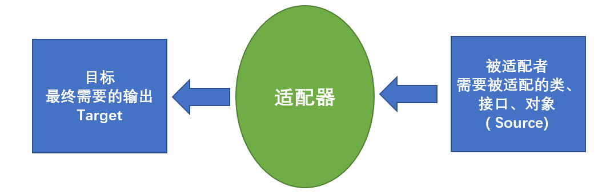
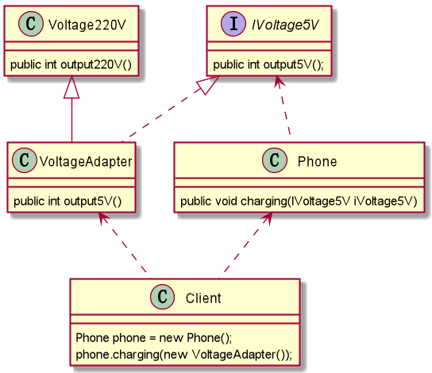
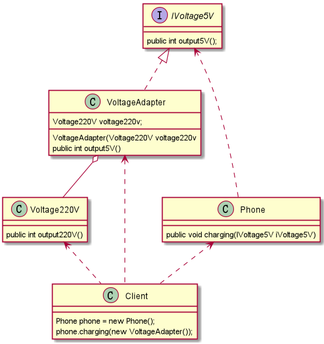

什么是适配器设计模式？
适配器设计模式—> 结构型模式
基本介绍
- 适配器模式（Adapter Pattern）将某个类的接口转换成客户端期望的另一个接口表示，主的目的是兼容性，让原本因接口不匹配不能一起工作的两个类可以协同工作。其别名为包装器(Wrapper)
- 主要分为三类：类适配器模式、对象适配器模式、接口适配器模式
工作原理
- 适配器模式：将一个类的接口转换成另一种接口，让原本接口不兼容的类可以兼容；
- 从用户的角度看不到被适配者，是解耦的；
- 用户调用适配器转化出来的目标接口方法，适配器再调用被适配者的相关接口方法；
- 用户收到反馈结果，感觉只是和目标接口交互，如图

类适配器模式
- Java 是单继承机制，所以类适配器需要继承 Src 类这一点算是一个缺点，因为这要求 Dst 必须是接口，有一定局限性;
- Src 类的方法在 Adapter 中都会暴露出来，也增加了使用的成本。
- 由于其继承了 Src类，所以它可以根据需求重写 Src类的方法，使得Adapter的灵活性增强了。
以生活中充电器的例子介绍适配器
- 充电器本身相当于 Adapter
- 220V交流电相当于 Src（即被适配者），
- 5V直流电相当于 Dst（即目标）。

被适配者 Src Class
1 | public class Voltage220V { |
适配器接口 Dst Class
1 | //适配接口 |
适配器 Adapter Class
1 | public class VoltageAdapter extends Voltage220V implements IVoltage5V { |
Phone Class
1 | public class Phone { |
Client Class
1 | public class Client { |
对象适配器模式
-
基本思路和类的适配器模式相同，其实算是同一种思想，只是将 Adapter 类作修改，不是继承 Src类， 而是持有 Src类的实例，以解决兼容性的问题。即：持有 Src类，实现 Dst类接口，完成 Src —> Dst 的适配；
-
根据合成复用原则，使用聚合替代继承，所以它解决了类适配器必须继承 Src的局限性问题，也不再要求 Dst必须是接口。使用成本更低，更灵活。
-
根据
合成复用原则，在系统中尽量使用关联关系来替代继承关系，因此大部分结构型模式都是对象结构型模式。对象适配器模式是适配器模式常用的一种；

被适配者 Src Object
1 | public class Voltage220V { |
适配器接口 Dst Object
1 | //适配接口 |
👉 适配器 Adapter Object
由继承变成了聚合
1 | public class VoltageAdapter implements IVoltage5V { |
Phone Object
1 | public class Phone { |
Client Object
1 | public class Client { |
接口适配器模式
- 核心思路：当不需要全部实现接口提供的方法时，可先设计一个抽象类实现接口，并为该接口中每个方法提供一个默认实现(空方法)，那么该抽象类的子类可有选择地覆盖父类的某些方法来实现需求。
- 适用于一个接口不想使用其所有的方法的情况。
适配器接口
1 | public interface Interface { |
抽象类实现接口 空方法
1 | public abstract class AbsAdapter implements Interface { |
Client
1 | public class Client { |
适配器模式的注意事项和细节
- 三种命名方式，是根据 Src 是以怎样的形式给到 Adapter (在Adapter里的形式) 来命名的。
- 类适配器：以类给到，在Adapter里，就是将 Src 当做类，继承；
- 对象适配器：以对象给到，在Adapter里，将 Src 作为一个对象，持有
- 接口适配器：以接口给到，在Adapter里，将 Src 作为一个接口，实现
- Adapter 模式最大的作用还是将原本不兼容的接口融合在一起工作。
适配器模式在SpringMVC框架应用
- SpringMvc 中的 HandlerAdapter，就使用了适配器模式；
- 使用 HandlerAdapter 的原因分析：可以看到处理器的类型不同，有多重实现方式，那么调用方式就不是确定的，如果需要直接调用 Controller 方法，需要调用的时候就得不断是使用 if/else 来进行判断是哪一种子类然后执行。那么如果后面要扩展Controller，就得修改原来的代码，这样违背了OCP原则。
感谢阅读
赏
 支付宝打赏
支付宝打赏
 微信打赏
微信打赏
支付宝打赏
微信打赏
赞赏一下